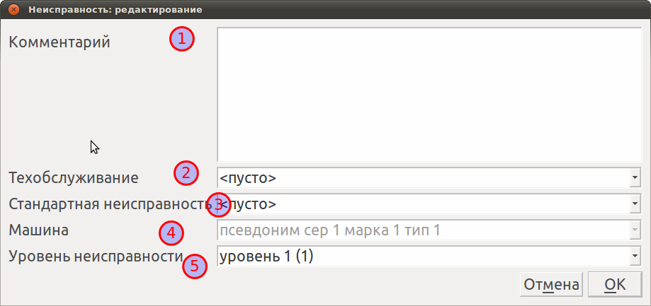
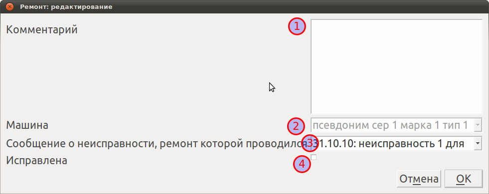
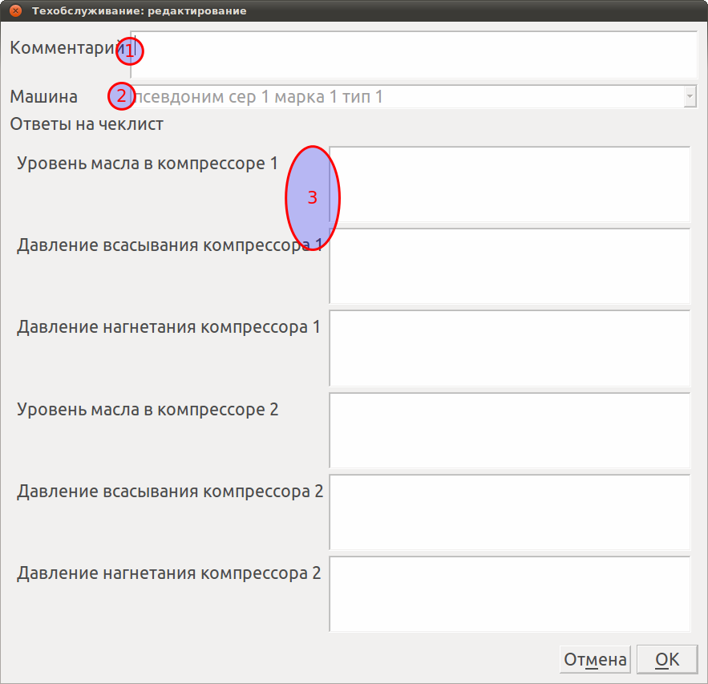
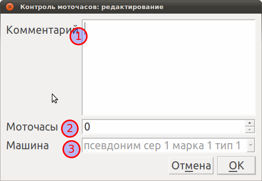

События
События - основной элемент системы журнала. Они служат для регистрации техосмотров, ремонтов, сообщений о неисправностях и контролях моточасов.
Добавление событий
Для добавления событий необходимо:
- В дереве оборудования выбрать единицу оборудования, к которой относится событие
- Нажать на кнопку "Добавить" внизу таблицы событий
После этого откроется окно добавления события.
Редактирование событий
Редактировать можно только события, несинхронизированные с сервером компании (в таблице выделяются розовым цветом). Для редактирования такого события необходимо выделить его и нажать на кнопку "Редактировать" внизу таблицы событий.
Удаление событий
Удалять можно только события, несинхронизированные с сервером компании (в таблице выделяются розовым цветом). Для удаления такого события необходимо выделить его и нажать на кнопку "Удалить" внизу таблицы событий.
Неисправности
Событие "Неисправность" создается при сообщении неисправности единицы оборудования.

- Комментарий - текстовое описание
- Техобслуживание, во время которого обнаружена данная неисправность, или "(пусто)", если неисправность сообщена клиентом
- Стандартная неисправность - предопределенная администратором системы неисправность для данной марки оборудования
- Машина - единица оборудования
- Уровень неисправности - категория важности неисправности
Ремонт
Событие "Ремонт" создается при ремонтировании единицы оборудования

- Комментарий - текстовое описание
- Машина - единица оборудования
- Сообщение о неисправности, ремонт которой производился
- Исправлена - исправлена ли в результате ремонта неисправность
Техобслуживание
Событие "Техобслуживание" создается при проведении техобслуживания единицы оборудования

- Комментарий - текстовое описание
- Машина - единица оборудования
- Ответы на чеклист. Каждой марке оборудования администратор системы определяет так называемый "чеклист". Каждый вопрос в нем может быть обязательным (ответ на него требуется при проведении техобслуживания) или нет. Обязательные вопросы выделяются жирным шрифтом
Контроль моточасов
Событие "Контроль моточасов" создается при проведении контроля моточасов единицы оборудования

- Комментарий - текстовое описание
- Моточасы - значение наработки моточасов, считанное при данном контроле с оборудования
- Машина - единица оборудования